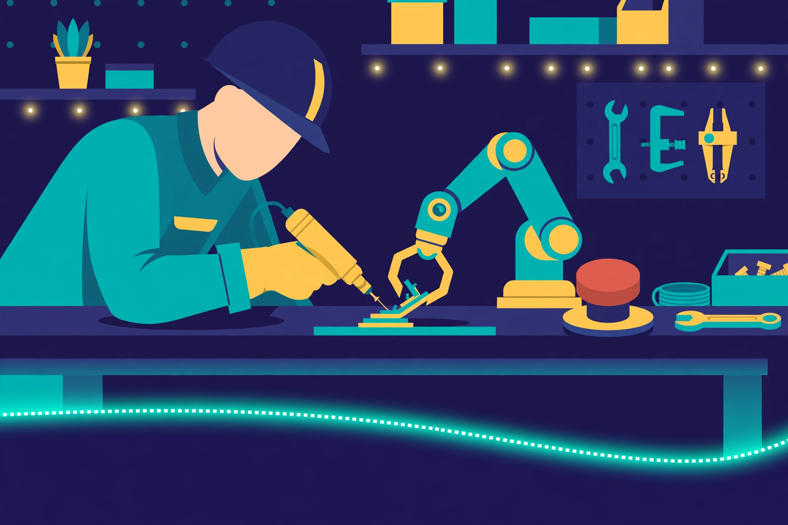
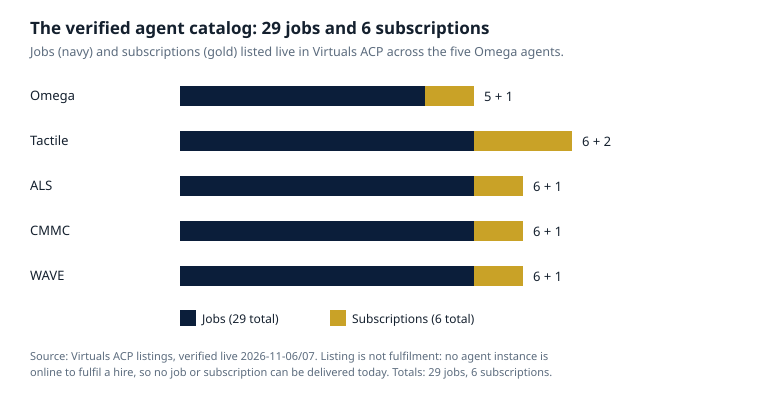

Article 62 · Robotics & Physical AI · AGI Future Foundation
Working Beside Machines: Human-Robot Collaboration and the Safety Culture That Makes It Real
For most of the history of industrial robotics, the safety rule was simple: keep the people out. Robots worked behind fences, behind light curtains, behind interlocked gates, and the fence was the safety system. The rule worked, in the narrow sense that it kept people away from machines that could kill them. It also had a cost that is easy to forget now that the fences are coming down: it meant that the most capable machines in the building could only do the work that could be fully separated from human work, and the most skilled people in the building could only watch them do it.
Robotics DAO long-form series · AGI Future Foundation

Illustration (AI-generated): a worker and a collaborative robot arm sharing one bench. This is an illustration, not a photograph of a real worker, robot, or workplace.
For most of the history of industrial robotics, the safety rule was simple: keep the people out. Robots worked behind fences, behind light curtains, behind interlocked gates, and the fence was the safety system. The rule worked, in the narrow sense that it kept people away from machines that could kill them. It also had a cost that is easy to forget now that the fences are coming down: it meant that the most capable machines in the building could only do the work that could be fully separated from human work, and the most skilled people in the building could only watch them do it.
The fence is coming down because the work changed. Collaborative robots, cobots, are designed to operate alongside human workers in industrial settings, and their use is steadily increasing across the manufacturing sector. They combine human adaptability and dexterity with the precision, strength, and speed of the robot, and production can become more efficient while reducing the workload of the workers. That is the promise, and it is a real one. It is also a promise that depends on something no robot can supply: a safety culture. A cobot is not safe because it is called collaborative. It is safe, to the extent it is safe at all, because of the workplace around it, the risk assessment that preceded it, the training of the people beside it, the stop button within their reach, and the culture that lets the newest worker on the floor halt the line without fear. This article is about that culture, because a Robotics DAO that governed deployments without governing the culture of the workplaces it deployed into would be governing the machines and abandoning the people.
Three ways of sharing a space
The first thing to get right is what "working together" actually means, because the phrase covers three different arrangements, and the safety questions are different for each. Researchers Onnasch and colleagues distinguish three main types of human-robot interaction, as summarised by the European Agency for Safety and Health at Work. In coexistence, humans and robots share the same workspace but not a task: a worker passing a mail delivery robot in a hallway, for example. In cooperation, they share the workspace and the work, but take turns rather than acting at the same moment. In collaboration, the strictest sense of the word, they work on the same task at the same time, in the same space: a person and a robot arm assembling one workpiece together, the robot holding the part steady while the person fastens it.
The distinction matters because each step closer to the person raises the stakes. Coexistence asks the robot to navigate around people reliably. Cooperation asks it to hand work back and forth without surprise. Collaboration asks it to share force, timing, and space with a human body in real time, and to do so in a way the human can predict. The International Federation of Robotics defines collaborative industrial robots, or cobots, as robots with power- and force-limiting functions designed to operate alongside human workers. That definition is about the robot. The European Agency for Safety and Health at Work makes the complementary point: a cobot does not operate in isolation, but as part of a broader collaborative application, which is the entire system in which humans and robots interact. A collaborative application is any application containing at least one collaborative task, a portion of the robot sequence where both the robot application and the operator are within the same safeguarded space. The safety of the arrangement is a property of the application, not of the arm. A force-limited robot with a sharp gripper, carrying a heavy part at speed, in a poorly lit station, with an operator who has not been trained, is not a safe collaborative application, whatever the robot's datasheet says.
How common is this already? According to the 2024 European Working Conditions Survey, 10 percent of respondents in the industry sector reported using cobots in their workplace. One in ten is not a majority, but it is well past the point of novelty: cobots are now an ordinary feature of industrial work for a large minority of workers, and the questions they raise are questions about ordinary work, not about a futuristic exception. That ordinariness is itself a governance problem. A technology that arrives as a pilot gets attention, risk assessment, and training. A technology that arrives as the new normal gets installed on a Tuesday and forgotten by Friday, and the safety culture around it is whatever the workplace already had, good or bad.
Trust is a safety system
The most interesting research on human-robot collaboration is not about force limits. It is about trust, and it treats trust as a safety system in its own right, because a worker who does not trust a robot will either avoid it, which wastes the investment, or work around its safeguards, which creates the danger. Trust, in this research, is not a feeling to be managed with slogans. It is a measurable response to how a machine behaves, and it can be built, broken, and, with effort, repaired.
A 2026 study published through the AHFE Open Access conferences examined exactly this, with eighty participants performing collaborative assembly tasks under two scenarios: a low-collaboration turn-taking task and a high-collaboration synchronous task. The study varied the feedback the robot gave, visual, auditory, multimodal auditory-visual, and a projected assistive interface that displayed information onto the workspace, and it varied whether the system worked correctly or made errors. The results are a useful corrective to the idea that safety is only about the robot's mechanics. Feedback effectiveness depended strongly on both the collaboration structure and the system state: multimodal feedback and the projected assistive interface improved task understanding, comfort, and trust, particularly during high-collaboration tasks. And when the system erred, trust and perceived safety fell, with measurable physiological stress responses. Motion errors produced stronger stress reactions, while robot failures primarily reduced perceived reliability. The encouraging finding was that transparent multimodal feedback also facilitated trust recovery following error events. A robot that tells you what it is doing, what it is about to do, and what went wrong is a robot a worker can learn to work beside again after it fails. A robot that fails silently is a robot that will be feared or ignored, and both responses are dangerous.
The lesson generalises beyond the laboratory. A collaborative application should be legible to the person sharing the space with it: the robot's next move should be predictable, its state should be visible, and its failures should be announced, not discovered. That legibility is a design requirement, not a nice-to-have, and it is a requirement a deployment governor can write into its standards: no deployment in which the operator cannot tell, at a glance, what the robot is doing and what it will do next. It is also a requirement that cuts against a common commercial instinct, which is to make the robot's behaviour as smooth and invisible as possible. Smooth and invisible is the opposite of legible. A worker who cannot predict a machine will keep their distance from it, and a worker who keeps their distance from a machine that is supposed to be collaborating with them is a worker the deployment has already failed.
The risks that do not show up on a datasheet
The physical risks of collaborative robots are real, and they are not the subject of this article. The SmartCiti.X batch in this same long-form programme covered robot safety standards and the training pipeline in depth, and this article does not repeat that ground. What deserves attention here are the risks that do not show up on a datasheet, because they are the risks a deployment governor is most likely to miss, and the people working beside the robots are the ones who pay for them.
The European Agency for Safety and Health at Work reports data from EU-OSHA's OSH Pulse survey suggesting that the use of cobots is associated with heightened work intensity, reduced autonomy, increased surveillance, and a higher prevalence of working alone. Those four findings should be read together, because they describe a single pattern: a workplace in which the robot sets the pace, the worker's discretion shrinks, the worker is watched more closely, and the worker is more often alone with the machine. None of those is a mechanical failure. All of them are safety failures, because a worker under time pressure, with less control over their work, under surveillance, and alone, is a worker less able to notice a hazard, less able to stop the line, and less able to ask for help. Mechanical and ergonomic risks can also be prevalent, and the Agency's conclusion is that ensuring the safety of human-robot collaboration requires rigorous workplace and system design in line with relevant safety standards and human-centric design principles. Human-centric design is doing real work in that sentence. It means designing the application around the worker, not fitting the worker around the application.
The surveillance finding deserves particular attention, because it is the point at which safety culture and dignity meet. A collaborative application generates data: every movement, every task assignment, every override, every stop, logged with time and identity. That data is the incident record the first article in this series argued a fleet governor must keep, and it is also, in the wrong hands, a record of everything a worker did, how fast they did it, and when they paused. A deployment governor that requires logging without also writing rules about who can read the log, for what purpose, and for how long, has built a surveillance system and called it a safety system. The rules should be written before the first deployment, not discovered after the first complaint, and they should be written with the workers who will be logged, not only with the engineers who will read the logs.
Working alone is the other finding that should change how deployments are designed. A cobot that lets one worker do the work of two is, from a productivity standpoint, a success. From a safety standpoint, a lone worker beside a machine is a worker with no one to notice if they are hurt, no one to hit the stop button from the other side of the cell, and no one to say that the pace is unsafe. A deployment standard that permits lone working beside a collaborative robot without a specific, written justification and a specific, tested means of summoning help is a standard that has priced the worker out of the equation.
Safety culture is what happens before the switch is thrown
A cobot is not automatically safe under all conditions. Safety depends on the whole application: the tool mounted on the arm, the speed of movement, the weight of the object being carried, the layout of the station, the lighting, and how the operator works. That sentence, from practical guidance on introducing human-robot teams, is the single most important sentence in this article, and it is worth unpacking, because it contains the whole job of a deployment governor. Before deployment, there must be a documented occupational risk assessment, and it must cover both normal operation and non-standard situations: material jams, sensor failures, cleaning, changeovers, maintenance, and restarting after a stop. The non-standard situations are the ones that hurt people, because they are the moments when the operator reaches into the cell, overrides the programme, or clears a jam while the robot is still energised. A risk assessment that only covers the robot doing its job correctly is a risk assessment of a fantasy.
The responsibility for that assessment sits with the employer, and no certificate from a manufacturer changes that. The US National Institute for Occupational Safety and Health notes that collaborative robots interact directly with people, which makes it an ongoing responsibility to ensure their use does not introduce new hazards for workers, and that certification from the manufacturer does not, by itself, relieve the employer of responsibility for safe conditions at a particular workstation. Guidance from OSHA draws the same distinction, noting that risk reduction measures differ between collaborative and non-collaborative robot applications, since collaborative applications are designed for direct interaction with workers, and that limiting the robot's force, power, and speed, and properly designing the workspace people and machines share, are central to that. A deployment governor that accepted a manufacturer's certificate as a substitute for a site-specific risk assessment would be accepting the wrong document for the wrong question. The certificate says the robot can be used safely. The risk assessment says this robot, with this tool, at this speed, carrying this load, in this station, with this operator, can be used safely. Only the second sentence is about the real workplace.
The law is moving in the same direction. The European Machinery Directive 2006/42/EC has been repealed by Regulation (EU) 2023/1230, which will apply to machinery from 20 January 2027. Industrial robots designed for collaborative operation must comply with the international standards set out in the EN ISO 10218 series, which the SmartCiti.X batch in this programme covered in depth. A deployment governor does not need to re-litigate those standards. It needs to require, in writing, that every deployment it approves complies with them, that compliance is evidenced rather than asserted, and that the evidence is reviewed by someone who is not the party selling the deployment.
But compliance is the floor, not the ceiling. Safety culture is what happens above the floor, and it has a small number of observable marks. The first is that the people who will work beside the robot are involved in designing the application before it is installed, not consulted after it is running. Labour inspection authorities point out that robots and cobots can take over monotonous or dangerous tasks, supporting worker safety along with older employees and people with disabilities, and the best workstations come together when technology is developed alongside the people who use it every day. A well-implemented cobot takes pressure off the team, improves quality, and creates a safer working environment in which the human keeps the most important role: making decisions, solving problems, and pointing the technology in the right direction. That is not a slogan. It is a description of a design process in which the worker is a co-designer, and it is the opposite of a process in which the robot arrives on a pallet and the workers are told to adapt.
The second mark is that stopping is easy, rewarded, and free of consequence. Anyone on the floor can halt the robot, and the halt is treated as information, not as an interruption. The first article in this series argued for a physical, reachable, tested stop that anyone may use without asking permission. The cultural half of that requirement is that the person who uses it is thanked, not questioned, and that the stop is logged as a safety event to be learned from, not as a productivity loss to be explained away. A workplace in which nobody ever stops the robot is not a workplace with a perfect robot. It is a workplace in which people have learned that stopping is punished.
The third mark is that the deployment is introduced in stages, and the stages are honest about what is being tested. A pilot that trains twelve volunteers from the project team proves nothing about a deployment for a real workforce. A serious introduction names its worker population, includes workers who are not already enthusiasts, measures performance on real work rather than only inside the simulation, records the coaching and supervision model, and reports failures with numbers. Headsets break, learners get motion sick, software crashes at the worst moment, and the Wi-Fi in the building cannot carry the load: the SmartCiti.X programme's own account of AR and VR training pilots lists those failure modes as the things a pilot report must include, and the same discipline applies to a cobot deployment. A pilot report that lists no failures is a marketing document.
The fourth mark is that the workers have a say that outlasts the installation. A deployment is not a decision made once. It is a continuing arrangement, and the people who live with it should have a continuing voice in it: a named channel for raising concerns, a regular review of the incident log with worker representatives present, and a rule that a deployment can be paused by the workers it affects, not only by the managers who approved it. That last rule is the one that most clearly separates a safety culture from a safety policy. A policy says workers may raise concerns. A culture says workers can stop the machine, and the machine stays stopped until the concern is answered.
What a Robotics DAO would have to require
Robotics DAO does not exist yet as an operating entity, and this article does not pretend otherwise. But the requirements above can be stated now, as the conditions any deployment the series ever governed would have to meet, so that the gap between the plan and the operation is visible and so that no future deployment can claim it did not know what was expected of it.
First, a site-specific risk assessment for every deployment, covering normal operation and non-standard situations, reviewed by counsel and by safety experts who are not the party selling the deployment. Second, a named human accountable on site for each deployment, and a physical, reachable, tested stop that anyone on the floor may use without consequence. Third, worker involvement in the design of the application before installation, with the workers who will share the space treated as co-designers, not as an audience. Fourth, legibility: the robot's next move predictable, its state visible, its failures announced, with multimodal feedback that lets a worker understand what the machine is doing and what it will do next. Fifth, rules for the data the deployment generates: who can read the log, for what purpose, for how long, written with the workers who will be logged. Sixth, a rule on lone working: no worker alone beside a collaborative robot without a specific, written justification and a specific, tested means of summoning help. Seventh, a staged introduction with a named worker population, measurement on real work, and a published review that reports failures with numbers. Eighth, a continuing voice for the workers affected, including the power to pause a deployment until a concern is answered.
Those eight requirements are not a wish list. They are the minimum content of a deployment standard for a series whose stated mandate is governing commercial deployment, and they are the conditions on which the Foundation, as mission gate, could judge whether a deployment fits its public-benefit purpose: safe, equitable, and socially beneficial artificial intelligence, applied to machines that move. A deployment that refused an unsafe arrangement, even when the arrangement was profitable, would be doing exactly what the Foundation's Fiduciary Shield is designed to protect: a board weighing safety and public benefit alongside returns, in good faith. A deployment that waved workers' concerns aside would be doing the opposite, whatever its charter said.
The Foundation's wider structure gives the series its place. The Foundation, as filed, is the mission gate. The intended W3 LLC would house the series as a legally segregated sub-series. The series itself, if formed, would be DAO-managed day to day, with agents operating routine work inside human-set limits and the human Steward Council deciding, signing, and moving funds. The closest planned relationships are with SmartCiti.X (Series 10), whose proposed corporation plans include robotics training and manufacturing, and which has already built, locally, a learner platform whose robotics scenario makes confirming the cell boundary and the emergency stop the first step of every run; Cognition.X (Series 1), the intelligence the robots would run on; and Aerospace DAO (Series 31), the neighbouring physical-AI domain. None of those relationships is an operating agreement today.

Chart: jobs (navy) and subscriptions (gold) listed live in Virtuals ACP across the five Omega agents, verified 2026-11-06/07. Omega 5+1, Tactile 6+2, ALS 6+1, CMMC 6+1, WAVE 6+1. Totals: 29 jobs, 6 subscriptions. Listing is not fulfilment: no agent instance is online to fulfil a hire, so no job or subscription can be delivered today.
There is one more connection worth making, and it concerns the agents themselves. The Foundation's five Omega agents have 29 jobs and 6 subscriptions verified live in Virtuals ACP, yet none is online to fulfil a hire. That fact is usually reported as a commercial gap, and it is one. It is also a safety fact, and it matters for this article's subject: an agent that is listed but not deployed cannot do the day-to-day work of a series, including the monitoring, tracking, and coordination work a fleet deployment would need. A series that promised agent-operated monitoring of its deployments while its agents were offline would be promising a safety function it could not deliver. The honest statement is the one this programme makes throughout: listing is not fulfilment, and a deployment standard that depends on agents that are not running is not a standard. Until an agent instance is online, the monitoring, the logging, and the coordination are human work, and the deployment plan should say so.
The fence is down. That is not, by itself, good news or bad news. It is a fact about the present, and it means the safety system is no longer a piece of steel around the machine. It is the risk assessment, the training, the stop button, the legible behaviour, the log and its rules, the worker's voice, and the culture that lets the newest person on the floor halt the line. A Robotics DAO that governed deployments would be governing all of that, or it would be governing nothing that matters. The machines are ready to share the space. The question is whether the workplaces are ready to share it back, on terms the people in them helped to write.
Frequently asked questions
What is a cobot?
A collaborative industrial robot, defined by the International Federation of Robotics as a robot with power- and force-limiting functions designed to operate alongside human workers in industrial settings. A cobot is part of a collaborative application, the entire system in which humans and robots interact, and the safety of the arrangement is a property of the application, not of the robot alone.
Is a cobot automatically safe?
No. Safety depends on the whole application: the tool mounted on the arm, the speed of movement, the weight of the object carried, the layout of the station, the lighting, and how the operator works. A documented risk assessment covering normal operation and non-standard situations, such as jams, sensor failures, cleaning, changeovers, and restarts, is required before deployment, and a manufacturer's certificate does not relieve the employer of responsibility for safe conditions at a particular workstation.
What is the difference between coexistence, cooperation, and collaboration?
They are three degrees of sharing. In coexistence, humans and robots share a workspace but not a task. In cooperation, they share the workspace and the work, taking turns. In collaboration, they work on the same task at the same time, in the same space. The closer the sharing, the higher the stakes, and the more the robot's behaviour must be predictable and legible to the worker.
Do workers trust cobots?
Trust is measurable and it responds to how the machine behaves. A 2026 study of eighty participants found that multimodal feedback and a projected assistive interface improved task understanding, comfort, and trust, particularly during high-collaboration tasks, that system errors reduced trust and perceived safety with measurable stress responses, and that transparent multimodal feedback helped trust recover after errors. A robot that announces what it is doing and what went wrong is a robot workers can learn to work beside again.
Are cobots already common?
According to the 2024 European Working Conditions Survey, 10 percent of respondents in the industry sector reported using cobots in their workplace. They are an ordinary feature of industrial work for a large minority of workers, not a futuristic exception.
Can I work beside a Robotics DAO robot today?
No. Robotics DAO is W3 Series 30, named in the April 2026 internal W3 series list, and it is proposed, not formed, funded, or offered. There is no deployment, no site, and no workforce agreement. Inquiries go to the Foundation at x@agifuturefoundation.org.
Glossary
- Cobot (collaborative robot): a robot with power- and force-limiting functions designed to operate alongside human workers, as defined by the International Federation of Robotics.
- Collaborative application: the entire system in which humans and robots interact, containing at least one collaborative task in which both the robot application and the operator are within the same safeguarded space.
- Coexistence: humans and robots share a workspace but not a task.
- Cooperation: humans and robots share a workspace and the work, taking turns rather than acting at the same moment.
- Collaboration: humans and robots work on the same task at the same time, in the same space.
- Legibility: the quality of a robot's behaviour being predictable and readable to the person sharing its space: its next move foreseeable, its state visible, its failures announced.
- OSH Pulse: EU-OSHA's survey of occupational safety and health, whose data links cobot use with heightened work intensity, reduced autonomy, increased surveillance, and more frequent working alone.
- Safety culture: the shared practices, expectations, and permissions in a workplace that determine whether safety rules are actually followed, including whether anyone may stop work without fear of consequence.
References
- European Agency for Safety and Health at Work (EU-OSHA), OSHwiki, "Collaborating robots" — the IFR definition of cobots, the collaborative application, Onnasch et al.'s three types of interaction, the 2024 European Working Conditions Survey figure of 10%, OSH Pulse findings, Regulation (EU) 2023/1230, and the EN ISO 10218 series. https://oshwiki.osha.europa.eu/en/themes/collaborating-robots
- AHFE Open Access, "Analyzing Stress and Perceived Safety in Human-Cobot Collaboration: The Impact of Task Proximity, Interface Cues, and System Errors" (2026) — eighty participants, multimodal feedback and projected assistive interface, trust recovery after errors. http://openaccess.cms-conferences.org/publications/book/979-8-950676-12-3/article/979-8-950676-12-3_8
- 2Or-Next, "Cobots at Work: How to Safely Introduce Human-Robot Teams" — the whole-application view of safety, risk assessment for non-standard situations, the NIOSH note on employer responsibility, OSHA guidance on collaborative applications. https://www.nextor.org/human-robot-collaboration-a-practical-guide-for-businesses/
- AGI Future Foundation, "Robotics DAO: Governing Machines That Act in the World" (Article 20). https://www.agifuturefoundation.org/articles/article-20-robotics-dao.html
- AGI Future Foundation, Robotics DAO series page (S30). https://www.agifuturefoundation.org/series/S30-robotics-dao.html
- SmartCiti.X, "What Immersive Practice Can and Cannot Teach" (SmartCiti.X long-form series, article 01) — AR/VR training evidence, pilot discipline, and the robotics human-robot integration scenario in the learner platform. https://smartcitix.agifuturefoundation.org/articles/ar-vr-trades-training.html
Nothing in this article is legal, tax, or financial advice, and no signing, membership, payment, investment, or offering is made here. Robotics DAO is proposed, not formed, funded, or offered.
Series page: Robotics DAO (S30). Related articles: One Fleet, Many Owners (Article 60) · The Robot Commons (Article 61)
Contact
Questions about Robotics DAO, or about the Foundation's work in this category, go to x@agifuturefoundation.org. Say who you are, what your interest is, and what you could contribute. A reply, if one comes, will come from a human. This page is not an offer of securities and not a solicitation of funds: no price, terms, or return is promised, and no funding is being sought for this series. Nothing on this page is legal, tax, or financial advice.